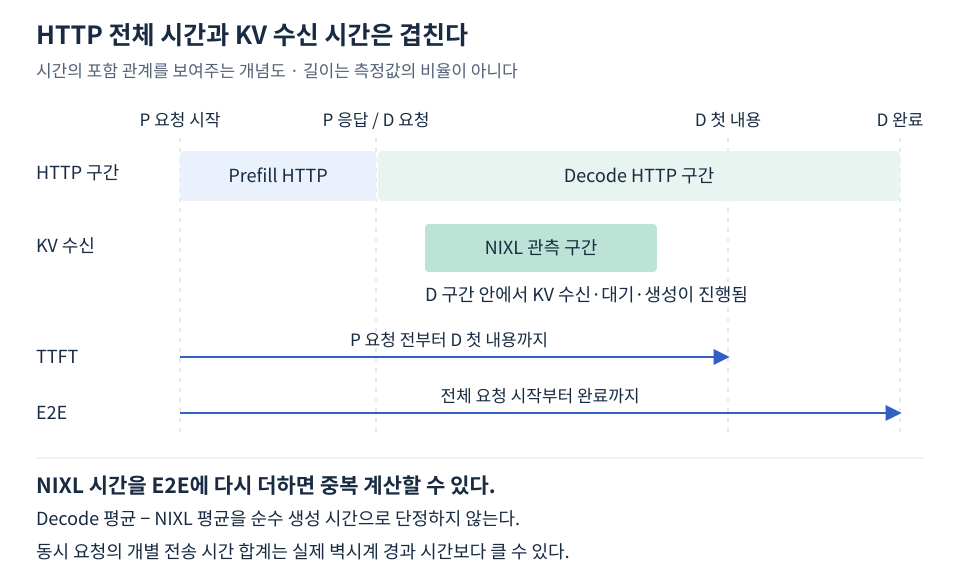

P/D 성능에는 여러 시간이 등장한다. 클라이언트의 전체 대기, P와 D의 HTTP 구간, NIXL의 개별 전송 시간은 측정 주체와 시작·종료 경계가 다르다. 같은 단위인 초로 출력돼도 서로 교환 가능한 값이 아니다.
어떤 지표를 어느 서버에서 읽었는가
이 자료의 Pull 방식에서는 D의 /metrics에서 아래 누적값을 요청 전후로 읽었다. 여러 D를 사용하면 모든 수신 서버의 증가량을 합한다.
| 지표 | 측정에 사용한 의미 |
|---|---|
vllm:nixl_bytes_transferred_count |
기록된 전송 건수 |
vllm:nixl_bytes_transferred_sum |
기록된 전송 bytes 합계 |
vllm:nixl_xfer_time_seconds_sum |
개별 전송 시간의 합계 |
vllm:nixl_num_failed_transfers_total |
기록된 실패 전송 수 |
vllm:prompt_tokens_by_source_total{source="external_kv_transfer",...} |
외부 KV 전달을 출처로 처리한 입력 토큰 |
지표는 vLLM NixlConnector 안내와 보존된 원본 Prometheus 텍스트를 함께 확인한다. 메트릭 누락을 0으로 간주하면 검증이 틀어지므로 공통 비교 함수는 누락 시 오류를 낸다. 단일 연결 확인용 초기 함수는 단순 합산이므로 실제 지표 존재도 원본에서 확인한다.
평균은 같은 구간의 증가량으로 계산한다
전송 건수 N = 요청 후 count − 요청 전 count
전송 bytes B = 요청 후 bytes_sum − 요청 전 bytes_sum
전송 시간 S = 요청 후 seconds_sum − 요청 전 seconds_sum
건당 평균 크기 = B / N
건당 평균 시간 = S / N
수신 서버가 둘이면 (S₁ + S₂) / (N₁ + N₂)다. 건수가 다를 때 서버별 평균을 단순 평균하면 잘못된 값이 된다. N=0인 독립 서버는 “해당 없음 — 원격 전송 0건”으로 표시한다. 로컬 KV를 안 썼다는 뜻은 아니다.
예열 요청과 그 통계 반영을 끝낸 뒤 기준값을 읽는다. 다른 요청을 동시에 보내지 않고, 본 측정의 기대 전송 건수와 실제 증가량이 일치하는지 검사한다. 반영 대기는 처리량의 벽시계 구간 밖에 둔다. 카운터 리셋·누락·실패·기대 건수 불일치 시 평균의 해석을 보류한다.
전송 시간 합계는 벽시계 경과 시간이 아니다
두 전송이 같은 1초 동안 동시에 진행됐다면 개별 시간 합계는 2초지만 경과 시간은 1초다. 보존된 동시 4개·총 20개 반복에서는 전송 시간 합계 16.759초, 실제 실험 경과 11.264초였다. 이는 겹침으로 설명할 수 있으며 순차 전송 시간처럼 읽으면 안 된다.
NIXL의 기록 시간도 순수 물리 링크에서 바이트가 이동한 시간만을 분리한 값이라고 단정하지 않는다. 이 자료에서는 라이브러리가 기록한 전송 지연으로 사용한다.
전송량을 이 시간 합계로 나눈 값과 전체 경과 시간으로 나눈 값 역시 의미가 다르다. 실제 수치의 계산과 동시 전송 예시는 KV 전송 유효 처리량에 정리했다.
HTTP 구간과 NIXL 구간은 중복될 수 있다
클라이언트의 P/D 측정은 다음처럼 구분한다.

Prefill HTTP는 순수 Prefill 커널 시간이 아니고, Decode 구간도 순수 Decode 계산 시간이 아니다. KV 수신은 D 구간에서 일어나므로 NIXL 평균을 E2E에 또 더하지 않는다. 개별 요청과 전송의 일대일 시간 매핑·겹침을 추적하지 않은 상태에서 Decode 평균 − NIXL 평균을 순수 생성 시간으로 확정하지도 않는다.
스트리밍은 첫 응답과 생성 중 간격을 나눈다
- TTFT: 요청 시작부터 첫 비어 있지 않은 내용 수신까지. P/D에서는 P 요청 전부터 시작한다.
- E2E: 요청 시작부터 스트리밍 완료를 확인한 시점까지.
- TPOT 추정:
(마지막 내용 수신 − 첫 내용 수신) / (출력 토큰 수 − 1).
SSE chunk에는 여러 토큰이 묶일 수 있어 이 TPOT는 클라이언트 관측 추정치다. GPU 커널 시간이나 정확한 개별 토큰 지연과 동일하지 않다. 해당 스트리밍 셀은 NIXL 메트릭을 동시에 수집하지 않았으므로 이전 실행의 KV 평균을 그 셀의 값처럼 넣지 않는다.
동시성 실험은 closed-loop다. worker가 하나 끝나면 다음 요청이 시작된다. 요청별 E2E는 worker 안에서 측정을 시작하므로 아직 시작하지 않은 작업의 클라이언트 큐 대기는 포함하지 않는다. 전체 처리량은 본 측정 전체 벽시계 시간으로 계산한다. 고정 도착률·긴 입력과 짧은 입력을 섞는 서비스 부하 실험과는 다르다.
처리량과 요청 하나의 속도를 섞지 않는다
완료 요청 처리량 = 성공한 요청 수 / 전체 측정 경과 시간
전체 출력 처리량 = 성공 응답의 출력 토큰 합 / 전체 측정 경과 시간
출력 32토큰으로 고정하고 모두 성공했다면 출력 처리량은 요청 처리량의 약 32배다. 동시 요청이 겹치므로 평균 E2E의 역수를 전체 요청 처리량으로 사용하지 않는다.
초기 비교에는 Prefill HTTP·Decode 구간만 출력돼 KV 지연을 따로 알 수 없었다. 그 출력만 보고 KV 시간을 계산해 낼 수는 없다. 그래서 전후 메트릭을 추가한 동일 구간 재측정을 보존했다. 성능 비교 표는 이 재측정끼리 묶었으며, 전송 통계를 수집하지 않은 스트리밍 결과에는 다른 실행의 평균을 채워 넣지 않았다.